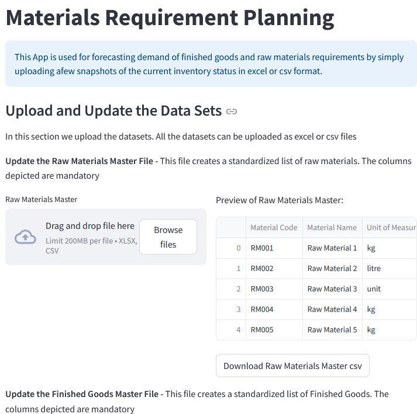
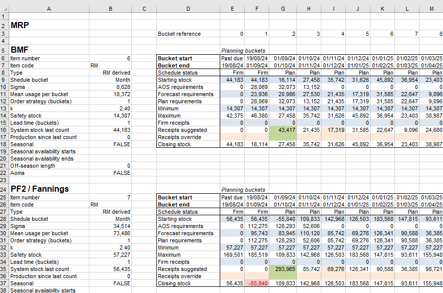
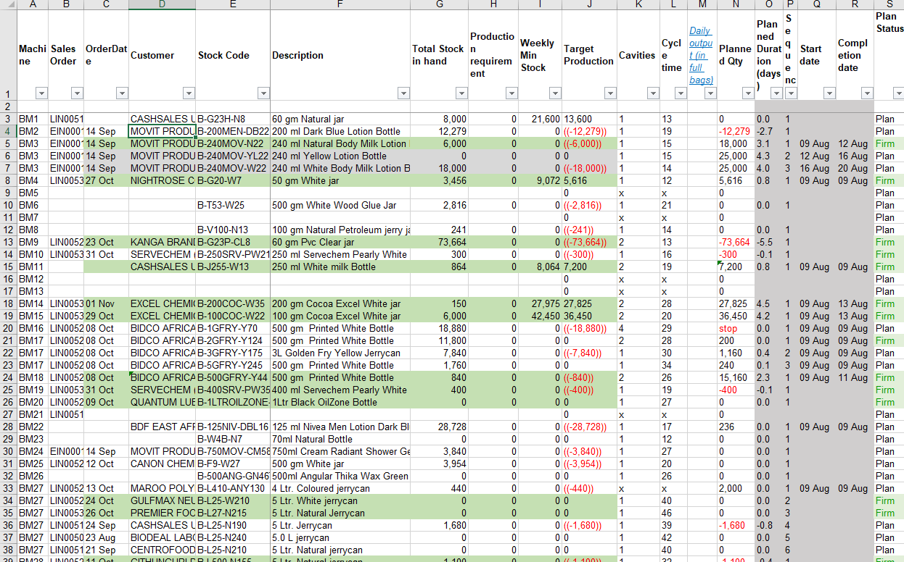
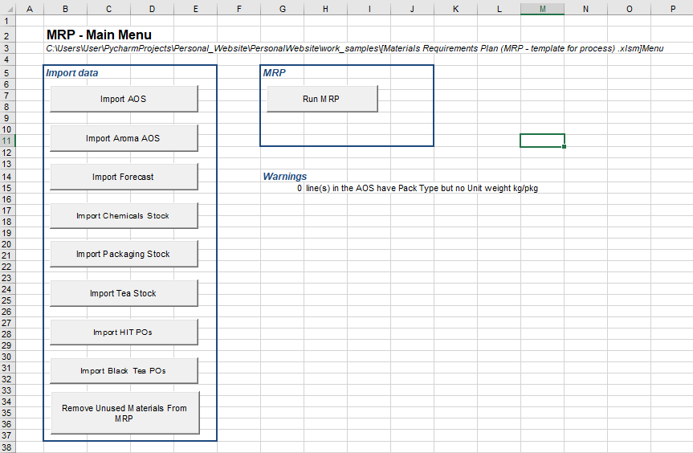

GitHub Portfolio
Explore my code repositories, data analysis projects, and open-source supply chain tools
 github.com/johngenga
github.com/johngenga
Practical supply chain applications — from machine learning forecasting to ERP implementation
Explore my code repositories, data analysis projects, and open-source supply chain tools
github.com/johngenga

A comprehensive supply chain planning application that integrates machine learning-based demand forecasting with full Material Requirements Planning (MRP) functionality. Built to replace complex Excel-based systems with an interactive, user-friendly web interface.
Advanced templates developed and refined through years of practical supply chain planning

Comprehensive template integrating demand planning with production scheduling and raw material requirements. Used in live manufacturing environments with 3,000+ SKUs.
Download Template
Production scheduling and capacity planning tool for discrete manufacturing environments. Handles machine routing, changeover optimization, and capacity constraint management.
Download Sample
User-friendly interface with guided navigation, data validation, and structured input sections for master data management.

Capacity planning module with machine-level routing optimization, load balancing, and bottleneck identification.
Major technology transformation projects I've led or co-led throughout my career
One Acre Fund | 2021–2023
General Plastics | 2016–2018
Finlays Tea Extracts | 2010–2016
Finlays Extracts & Ingredients | 2008–2010
Designed and deployed a mobile-first order processing and inventory management system using Google AppSheet at Agventure Limited. The app replaced manual Excel-based processes with automated workflows accessible from any device.
I'm currently working on a system dynamics simulation model (Vensim) exploring supply chain risk and resilience, building on my MIT coursework. Check back soon or follow my GitHub for updates.
Follow on GitHub